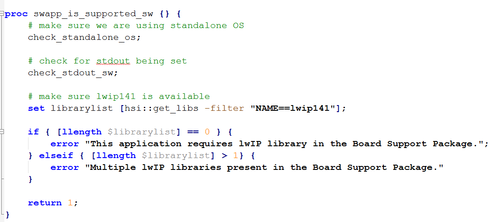
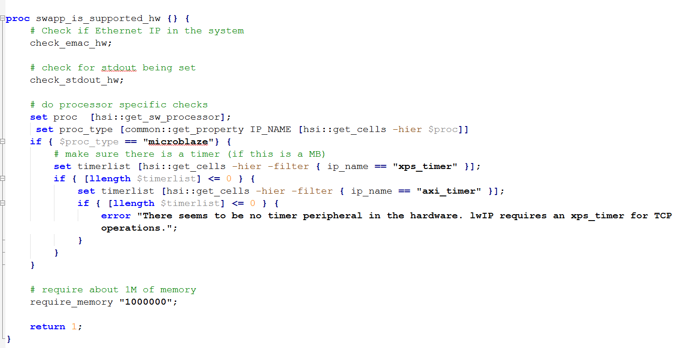
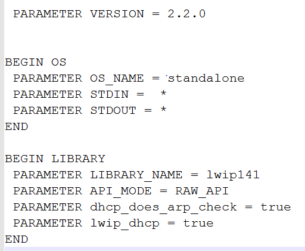

Creating a User Template Application
Xilinx Software Development Kit (SDK) and XSCT now support creation of user defined application templates using the repository functionality. To create a standalone or Linux application template:
-
A great way to start creating an user defined application template is to look at an existing template for the directory structure and files that needs to be defined along with the source files.
- Sample standalone OS application template files are available at <SDK installation directory>\data\embeddedsw\lib\sw_apps\lwip_echo_server .
- Sample Linux OS application template files are available at <SDK installation directory>\data\embeddedsw\lib\sw_apps_linux\linux_hello_world .
- Observe the folder name. Also note that the file names are same as application template names, excluding the file extensions.
- Decide on your application template name and OS.
- Create an application TCL file. The TCL file name should be same as the application template name.
-
Add the following functions to the TCL file:
-
swapp_get_name: This function returns the application template name. The return value should be same as application template name.
proc swapp_get_name {} { return "lwIP Echo Server"; } -
swapp_get_description: This function returns the description of the application template in the SDK IDE. You can write the description to provide application details.
proc swapp_get_description {} { return "The lwIP Echo Server application provides a simple demonstration of how to use the light-weight IP stack (lwIP). This application sets up the board to use IP address 192.168.1.10, with MAC address 00:0a:35:00:01:02. The server listens for input at port 7 and simply echoes back whatever data is sent to that port." } -
swapp_is_supported_sw: This functions checks for the required software libraries for the application project. For example, the lwip_echo_server application template requires the lwip library in the BSP.

-
swapp_is_supported_hw: This function checks if the application is supported for a particular design or not. For example, lwip is not supported for MicroBlaze.

-
swapp_get_linker_constraints: This function is used to generate the linker script. If this function returns lscript no then the linkerscript is copied from the application template. For example, the FSBL application does not generate a linker script. There exists a default linker script in the src folder that is used to create an application.
proc swapp_get_linker_constraints {} { # don't generate a linker script. fsbl has its own linker script return "lscript no"; } -
swapp_get_supported_processors: This function checks the supported processors for the application template. For example, the linux_hello_world project is supports the ps7_cortexa9, psu_cortexa53, and microblaze processors.
proc swapp_get_supported_processors {} { return "ps7_cortexa9 psu_cortexa53 microblaze"; } -
proc swap_get_supported_os: This function checks the OS supported by the application template.
proc swapp_get_supported_os {} { return "linux"; }
-
swapp_get_name: This function returns the application template name. The return value should be same as application template name.
- Create an application MSS file to provide specific driver libraries to the application template. The MSS file name should be similar to the application template name.
-
Provide the OS and LIBRARY parameter details.

- Copy the newly created TCL and MSS files to the data folder.
- Create your source source files and save them in the src folder. Copy the lscript.ld file to the src folder, if required.
-
Move the data and src folders to a newly created folder. For example:
- For standalone application template, create a folder sw_apps and move the data and src folders to the newly created folder. SDK considers the applications created in the sw_apps folder as standalone applications.
- For Linux application templates, create a folder sw_apps_linux and move the data and src folders to the newly created folder. SDK considers the applications created in the sw_apps_linux folder as Linux applications.